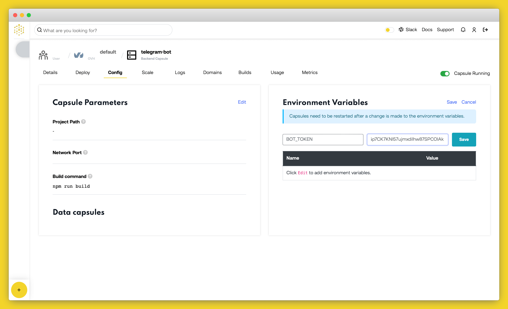

Create and Host a Telegram Bot with Node.js on Code Capsules

Social media bots allow you to automate responses and reactions to posts or messages sent to the bot.
In this tutorial, we'll extend a boilerplate Express application on Code Capsules to create a Telegram bot in Node.js that tracks and responds with current Ethereum prices.
Getting Started
Navigate to the Express.js deployment guide and follow the instructions outlined there to deploy the boilerplate application. You will need to clone the forked repository to your local development environment to extend the functionality of the boilerplate application and make a Telegram bot.
We need to install the node_modules for the boilerplate application before we can run it locally. Navigate to the project's root folder in a terminal or command prompt window and run npm install there.
Now you can run npm start in the project's root folder to see how the application looks.
Register a Bot Account
You'll need a Telegram user account before you can create a Telegram bot. Head over to Telegram and create an account if you don't already have one.
When you've signed in to Telegram, search for "BotFather" (a bot for managing all other Telegram bots) and start a new chat with it. Follow the steps below to register a new bot with the BotFather:
- Type
/startand press send. - Type
/newbotand press send. - Choose a name for your bot.
- Choose a username for your bot that ends in
bot.
The BotFather will respond with a message containing an access token for your newly created bot. This access token will allow our application to access the Telegram API and tell our bot what to do when receiving different messages from users.
To confirm that your bot was created successfully, search for the bot's username. You should be able to see it and start a conversation with it, although it won't respond as we haven't written the bot's logic yet.
Set Up the Development Environment
Your bot's access token is sensitive data and shouldn't be written in the code because anyone with access to your token can control your bot, so it's important to store it where it's safe and secure. The solution is to use environment variables to reference sensitive information in code.
Create a .env file in the project's root folder and add the line below to it, replacing <YOUR_BOT_TOKEN> with the actual access token you were issued with by the BotFather:
BOT_TOKEN=<YOUR_BOT_TOKEN>
Add .env to the .gitignore file on a new line so that the .env file won't be uploaded to your remote repository when you push your changes.
Install Required Packages
Next, install the package for loading environment variables by running the command below from a terminal window in the project's root folder:
npm install dotenv
Also install the axios and telegraf packages by running the commands listed below from a terminal window in the project's root folder:
npm install axios
npm install telegraf
Create the Bot Logic
Open index.js in the root folder and modify its contents with the code below:
const express = require('express')
const expressApp = express()
const axios = require("axios");
const path = require("path")
const port = process.env.PORT || 3000;
expressApp.use(express.static('static'))
expressApp.use(express.json());
require('dotenv').config();
const { Telegraf } = require('telegraf');
const bot = new Telegraf(process.env.BOT_TOKEN);
expressApp.get("/", (req, res) => {
res.sendFile(path.join(__dirname + '/index.html'));
});
bot.launch()
The code snippet above instantiates express, axios and telegraf objects, which we'll need to create the telegram bot. Notice how we use environment variables to reference our bot's access token in this line: const bot = new Telegraf(process.env.BOT_TOKEN);.
Using the bot.launch() command isn't efficient from a bandwidth perspective, as our bot continously polls the Telegram API to check if it has received any new messages. Later in the tutorial, we will look at how to use webhooks in order to be more conservative with the bandwidth our bot uses.
Add Bot Commands
Now it's time to add the logic for the commands which tell our bot how to respond to different messages. Add the code below to index.js just above the bot.launch() line:
bot.command('start', ctx => {
console.log(ctx.from)
bot.telegram.sendMessage(ctx.chat.id, 'Hello there! Welcome to the Code Capsules telegram bot.\nI respond to /ethereum. Please try it', {
})
})
bot.command('ethereum', ctx => {
var rate;
console.log(ctx.from)
axios.get(`https://api.coingecko.com/api/v3/simple/price?ids=ethereum&vs_currencies=usd`)
.then(response => {
console.log(response.data)
rate = response.data.ethereum
const message = `Hello, today the ethereum price is ${rate.usd}USD`
bot.telegram.sendMessage(ctx.chat.id, message, {
})
})
})
The first command is a startup message, which is triggered when a user sends a /start message to the bot. The startup message contains a greeting that tells the user which other commands the bot can respond to, in this case, the /ethereum command.
When a user sends an /ethereum message, the bot first checks for the latest price of ethereum at CoinGecko then send it to the user.
Run Bot Locally
Now that our bot can respond to users if they send it /start or /ethereum messages, run npm start in a terminal window while in the project's root folder to test this functionality.
Send your bot /start and /ethereum messages in Telegram, and it should respond with the correct messages.

Polling vs Webhooks
Earlier on, we mentioned that the bot.launch() command uses polling, which isn't the best practice when deploying any application to production. Using webhooks is a good alternative to polling, as it ensures our bot receives commands as they are sent by Telegram users, as opposed to constantly polling or asking the Telegram API for them.
Add the code below to the index.js file to add a webhook to our bot and comment out the bot.launch() line:
expressApp.use(bot.webhookCallback('/secret-path'))
bot.telegram.setWebhook('<YOUR_CAPSULE_URL>/secret-path')
.
.
.
// bot.launch()
expressApp.listen(port, () => console.log(`Listening on ${port}`));
Navigate to the capsule you deployed at the start of this tutorial and copy its domain from the "Overview" tab. In the code snippet above replace <YOUR_CAPSULE_URL> with the domain you just copied.
Deploying the Bot
On Code Capsules, navigate to the "Configure" tab of your capsule and add a BOT_TOKEN environment variable giving it the value of your bot's access token.

Now head over to your local development environment and commit your changes if you haven't already. Run git push in a terminal window while in the project's root folder to deploy your bot to production!